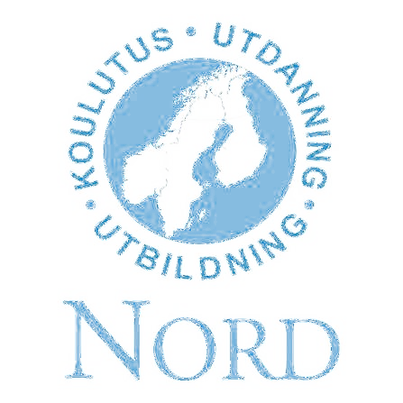

Work environment & safety reporting system
Thank you. Your incident report has been securely registered and delivered to the safety coordinators.
If not anonymous, your contact info enables follow-up on safety measures.
Reports comply with work environment guidelines (Arbetsmiljöverket). Information is processed confidentially. 🦌
Lapland Easter Egg Activated!
Autofilled with legendary Nordic test data.